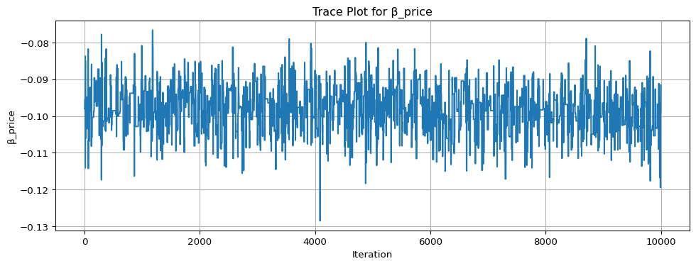
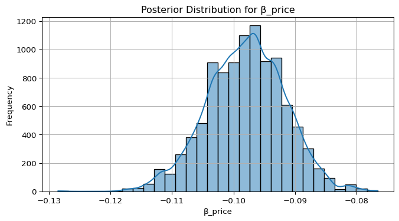

import numpy as np
import pandas as pd
# Set seed for reproducibility
np.random.seed(123)
# Define attributes
brand = ["N", "P", "H"] # Netflix, Prime, Hulu
ad = ["Yes", "No"]
price = np.arange(8, 36, 4)
# Generate all possible profiles
profiles = pd.DataFrame([(b, a, p) for b in brand for a in ad for p in price], columns=["brand", "ad", "price"])
m = len(profiles)
# Assign part-worth utilities (true parameters)
b_util = {"N": 1.0, "P": 0.5, "H": 0.0}
a_util = {"Yes": -0.8, "No": 0.0}
p_util = lambda p: -0.1 * p
# Number of respondents, tasks, and alternatives per task
n_peeps = 100
n_tasks = 10
n_alts = 3
# Function to simulate one respondent's data
def sim_one(id):
datlist = []
for t in range(1, n_tasks + 1):
sample_idxs = np.random.choice(m, size=n_alts, replace=False)
sampled_profiles = profiles.iloc[sample_idxs].copy()
sampled_profiles["resp"] = id
sampled_profiles["task"] = t
# Compute deterministic utility
sampled_profiles["v"] = (
sampled_profiles["brand"].map(b_util) +
sampled_profiles["ad"].map(a_util) +
p_util(sampled_profiles["price"])
).round(10)
# Add Gumbel noise
sampled_profiles["e"] = -np.log(-np.log(np.random.rand(n_alts)))
sampled_profiles["u"] = sampled_profiles["v"] + sampled_profiles["e"]
# Identify chosen alternative
sampled_profiles["choice"] = (sampled_profiles["u"] == sampled_profiles["u"].max()).astype(int)
datlist.append(sampled_profiles)
return pd.concat(datlist, ignore_index=True)
# Simulate data for all respondents
conjoint_data = pd.concat([sim_one(i) for i in range(1, n_peeps + 1)], ignore_index=True)
# Keep only observable columns
conjoint_data = conjoint_data[["resp", "task", "brand", "ad", "price", "choice"]]Multinomial Logit Model
This assignment explores two methods for estimating the MNL model: (1) via Maximum Likelihood, and (2) via a Bayesian approach using a Metropolis-Hastings MCMC algorithm.
1. Likelihood for the Multi-nomial Logit (MNL) Model
Suppose we have \(i=1,\ldots,n\) consumers who each select exactly one product \(j\) from a set of \(J\) products. The outcome variable is the identity of the product chosen \(y_i \in \{1, \ldots, J\}\) or equivalently a vector of \(J-1\) zeros and \(1\) one, where the \(1\) indicates the selected product. For example, if the third product was chosen out of 3 products, then either \(y=3\) or \(y=(0,0,1)\) depending on how we want to represent it. Suppose also that we have a vector of data on each product \(x_j\) (eg, brand, price, etc.).
We model the consumer’s decision as the selection of the product that provides the most utility, and we’ll specify the utility function as a linear function of the product characteristics:
\[ U_{ij} = x_j'\beta + \epsilon_{ij} \]
where \(\epsilon_{ij}\) is an i.i.d. extreme value error term.
The choice of the i.i.d. extreme value error term leads to a closed-form expression for the probability that consumer \(i\) chooses product \(j\):
\[ \mathbb{P}_i(j) = \frac{e^{x_j'\beta}}{\sum_{k=1}^Je^{x_k'\beta}} \]
For example, if there are 3 products, the probability that consumer \(i\) chooses product 3 is:
\[ \mathbb{P}_i(3) = \frac{e^{x_3'\beta}}{e^{x_1'\beta} + e^{x_2'\beta} + e^{x_3'\beta}} \]
A clever way to write the individual likelihood function for consumer \(i\) is the product of the \(J\) probabilities, each raised to the power of an indicator variable (\(\delta_{ij}\)) that indicates the chosen product:
\[ L_i(\beta) = \prod_{j=1}^J \mathbb{P}_i(j)^{\delta_{ij}} = \mathbb{P}_i(1)^{\delta_{i1}} \times \ldots \times \mathbb{P}_i(J)^{\delta_{iJ}}\]
Notice that if the consumer selected product \(j=3\), then \(\delta_{i3}=1\) while \(\delta_{i1}=\delta_{i2}=0\) and the likelihood is:
\[ L_i(\beta) = \mathbb{P}_i(1)^0 \times \mathbb{P}_i(2)^0 \times \mathbb{P}_i(3)^1 = \mathbb{P}_i(3) = \frac{e^{x_3'\beta}}{\sum_{k=1}^3e^{x_k'\beta}} \]
The joint likelihood (across all consumers) is the product of the \(n\) individual likelihoods:
\[ L_n(\beta) = \prod_{i=1}^n L_i(\beta) = \prod_{i=1}^n \prod_{j=1}^J \mathbb{P}_i(j)^{\delta_{ij}} \]
And the joint log-likelihood function is:
\[ \ell_n(\beta) = \sum_{i=1}^n \sum_{j=1}^J \delta_{ij} \log(\mathbb{P}_i(j)) \]
2. Simulate Conjoint Data
We will simulate data from a conjoint experiment about video content streaming services. We elect to simulate 100 respondents, each completing 10 choice tasks, where they choose from three alternatives per task. For simplicity, there is not a “no choice” option; each simulated respondent must select one of the 3 alternatives.
Each alternative is a hypothetical streaming offer consistent of three attributes: (1) brand is either Netflix, Amazon Prime, or Hulu; (2) ads can either be part of the experience, or it can be ad-free, and (3) price per month ranges from $4 to $32 in increments of $4.
The part-worths (ie, preference weights or beta parameters) for the attribute levels will be 1.0 for Netflix, 0.5 for Amazon Prime (with 0 for Hulu as the reference brand); -0.8 for included adverstisements (0 for ad-free); and -0.1*price so that utility to consumer \(i\) for hypothethical streaming service \(j\) is
\[ u_{ij} = (1 \times Netflix_j) + (0.5 \times Prime_j) + (-0.8*Ads_j) - 0.1\times Price_j + \varepsilon_{ij} \]
where the variables are binary indicators and \(\varepsilon\) is Type 1 Extreme Value (ie, Gumble) distributed.
The following code provides the simulation of the conjoint data.
Note
3. Preparing the Data for Estimation
The “hard part” of the MNL likelihood function is organizing the data, as we need to keep track of 3 dimensions (consumer \(i\), covariate \(k\), and product \(j\)) instead of the typical 2 dimensions for cross-sectional regression models (consumer \(i\) and covariate \(k\)). The fact that each task for each respondent has the same number of alternatives (3) helps. In addition, we need to convert the categorical variables for brand and ads into binary variables.
import pandas as pd
df = pd.read_csv("conjoint_data.csv")
# Preview the dataset
df.head()
# Convert categorical variables to dummy (binary) variables
df_encoded = pd.get_dummies(df, columns=["brand", "ad"], drop_first=True)
# Sort to make sure data is structured by respondent and task
df_encoded = df_encoded.sort_values(by=["resp", "task"]).reset_index(drop=True)
# Check the processed data
df_encoded.head()
# Separate features (X) and target (y)
y = df_encoded["choice"]
X = df_encoded.drop(columns=["resp", "task", "choice"])4. Estimation via Maximum Likelihood
import numpy as np
import pandas as pd
from scipy.optimize import minimize
# Convert to NumPy arrays
X_np = X.values
y_np = y.values
X_np = X.values.astype(float)
y_np = y.values.astype(int)
# Log-likelihood function for MNL
def neg_log_likelihood(beta):
Xb = X_np @ beta
Xb_reshaped = Xb.reshape((-1, 3)) # assuming 3 alternatives per task
y_reshaped = y_np.reshape((-1, 3))
log_probs = Xb_reshaped - np.log(np.exp(Xb_reshaped).sum(axis=1, keepdims=True))
chosen_log_probs = (log_probs * y_reshaped).sum()
return -chosen_log_probs # negative for minimization
# Initial guess
beta_init = np.zeros(X_np.shape[1])
# Estimate MLE
result = minimize(neg_log_likelihood, beta_init, method="BFGS")
# Estimated parameters
beta_hat = result.x
print("Estimated coefficients:", beta_hat)
# Standard errors from inverse Hessian
hessian_inv = result.hess_inv
se = np.sqrt(np.diag(hessian_inv))
# 95% confidence intervals
conf_int = np.array([
beta_hat - 1.96 * se,
beta_hat + 1.96 * se
]).T
# Create summary table
param_names = X.columns
summary_df = pd.DataFrame({
"parameter": param_names,
"estimate": beta_hat,
"std_error": se,
"CI_lower": conf_int[:, 0],
"CI_upper": conf_int[:, 1]
})
summary_dfEstimated coefficients: [-0.0994805 0.94119507 0.50161572 -0.73199435]| parameter | estimate | std_error | CI_lower | CI_upper | |
|---|---|---|---|---|---|
| 0 | price | -0.099480 | 0.006358 | -0.111942 | -0.087019 |
| 1 | brand_N | 0.941195 | 0.114009 | 0.717737 | 1.164653 |
| 2 | brand_P | 0.501616 | 0.120847 | 0.264755 | 0.738477 |
| 3 | ad_Yes | -0.731994 | 0.088569 | -0.905590 | -0.558399 |
5. Estimation via Bayesian Methods
import numpy as np
# Reuse your float-casted X_np and y_np
X_np = X.values.astype(float)
y_np = y.values.astype(int)
# Log-likelihood
def log_likelihood(beta):
Xb = X_np @ beta
Xb = Xb.reshape((-1, 3))
y_reshaped = y_np.reshape((-1, 3))
log_probs = Xb - np.log(np.exp(Xb).sum(axis=1, keepdims=True))
return (log_probs * y_reshaped).sum()
# Log-prior: N(0,5) for binary betas, N(0,1) for price
def log_prior(beta):
return (
-0.5 * (beta[:3]**2 / 5**2).sum()
-0.5 * (beta[3]**2 / 1**2)
)
# Log-posterior = log-likelihood + log-prior
def log_posterior(beta):
return log_likelihood(beta) + log_prior(beta)
# MCMC settings
n_samples = 11000
n_params = X_np.shape[1]
samples = np.zeros((n_samples, n_params))
accept = 0
# Initial guess
beta_curr = np.zeros(n_params)
log_post_curr = log_posterior(beta_curr)
# Proposal std: 0.05 for binary vars, 0.005 for price
proposal_sd = np.array([0.05, 0.05, 0.05, 0.005])
# MCMC loop
np.random.seed(42)
for i in range(n_samples):
proposal = beta_curr + np.random.normal(0, proposal_sd)
log_post_prop = log_posterior(proposal)
log_accept_ratio = log_post_prop - log_post_curr
if np.log(np.random.rand()) < log_accept_ratio:
beta_curr = proposal
log_post_curr = log_post_prop
accept += 1
samples[i] = beta_curr
# Drop burn-in (first 1000)
samples_post = samples[1000:]
# Summary stats
import pandas as pd
param_names = X.columns
posterior_df = pd.DataFrame(samples_post, columns=param_names)
summary = posterior_df.describe(percentiles=[0.025, 0.975]).T
summary["CI_lower"] = summary["2.5%"]
summary["CI_upper"] = summary["97.5%"]
summary = summary[["mean", "std", "CI_lower", "CI_upper"]]
summary| mean | std | CI_lower | CI_upper | |
|---|---|---|---|---|
| price | -0.097997 | 0.006312 | -0.111298 | -0.086036 |
| brand_N | 0.933301 | 0.100533 | 0.725368 | 1.137294 |
| brand_P | 0.496707 | 0.112263 | 0.260745 | 0.717988 |
| ad_Yes | -0.505975 | 0.185158 | -0.754333 | -0.240623 |
import matplotlib.pyplot as plt
import seaborn as sns
# Choose parameter to plot — use column name or index
param_to_plot = "price" # or use: X.columns[-1]
# Trace plot
plt.figure(figsize=(12, 4))
plt.plot(posterior_df[param_to_plot])
plt.title(f"Trace Plot for β_{param_to_plot}")
plt.xlabel("Iteration")
plt.ylabel(f"β_{param_to_plot}")
plt.grid(True)
plt.show()
# Histogram of the posterior
plt.figure(figsize=(8, 4))
sns.histplot(posterior_df[param_to_plot], bins=30, kde=True)
plt.title(f"Posterior Distribution for β_{param_to_plot}")
plt.xlabel(f"β_{param_to_plot}")
plt.ylabel("Frequency")
plt.grid(True)
plt.show()

mle_df = pd.DataFrame({
"parameter": X.columns,
"MLE_estimate": beta_hat,
"MLE_std_error": se,
"MLE_CI_lower": beta_hat - 1.96 * se,
"MLE_CI_upper": beta_hat + 1.96 * se
})
summary.reset_index(inplace=True)
summary.rename(columns={"index": "parameter"}, inplace=True)
comparison = pd.merge(summary, mle_df, on="parameter")
comparison| parameter | mean | std | CI_lower | CI_upper | MLE_estimate | MLE_std_error | MLE_CI_lower | MLE_CI_upper | |
|---|---|---|---|---|---|---|---|---|---|
| 0 | price | -0.097997 | 0.006312 | -0.111298 | -0.086036 | -0.099480 | 0.006358 | -0.111942 | -0.087019 |
| 1 | brand_N | 0.933301 | 0.100533 | 0.725368 | 1.137294 | 0.941195 | 0.114009 | 0.717737 | 1.164653 |
| 2 | brand_P | 0.496707 | 0.112263 | 0.260745 | 0.717988 | 0.501616 | 0.120847 | 0.264755 | 0.738477 |
| 3 | ad_Yes | -0.505975 | 0.185158 | -0.754333 | -0.240623 | -0.731994 | 0.088569 | -0.905590 | -0.558399 |
6. Discussion
We observe that \(\beta_{\text{Netflix}} > \beta_{\text{Prime}}\), indicating that—holding ads and price constant—consumers prefer Netflix over Prime. This suggests a stronger brand preference for Netflix. The fact that \(\beta_{\text{price}}\) is negative aligns with economic intuition: as price increases, the utility derived from an option decreases. This indicates that consumers are price-sensitive and prefer lower-cost alternatives.
To simulate and estimate parameters for a multi-level (hierarchical) model, we would allow each respondent to have their own set of preference parameters, \(\beta_i\), drawn from a population-level distribution, such as \(\beta_i \sim \mathcal{N}(\mu, \Sigma)\). This reflects realistic preference heterogeneity. During estimation, we would infer both the individual-level betas and the population-level parameters (\(\mu\), \(\Sigma\)), typically using Bayesian methods. This structure enables more personalized insights and is the standard for analyzing real-world conjoint data.